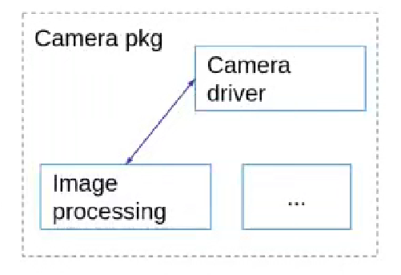
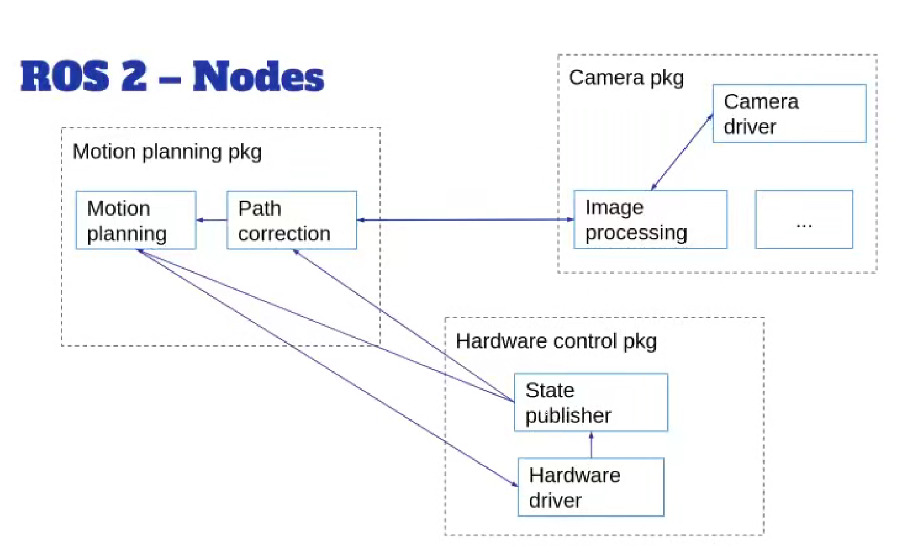
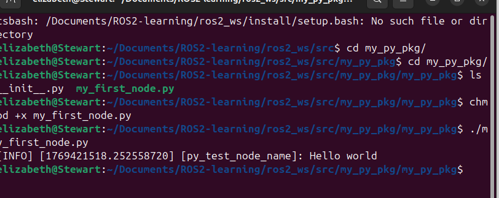
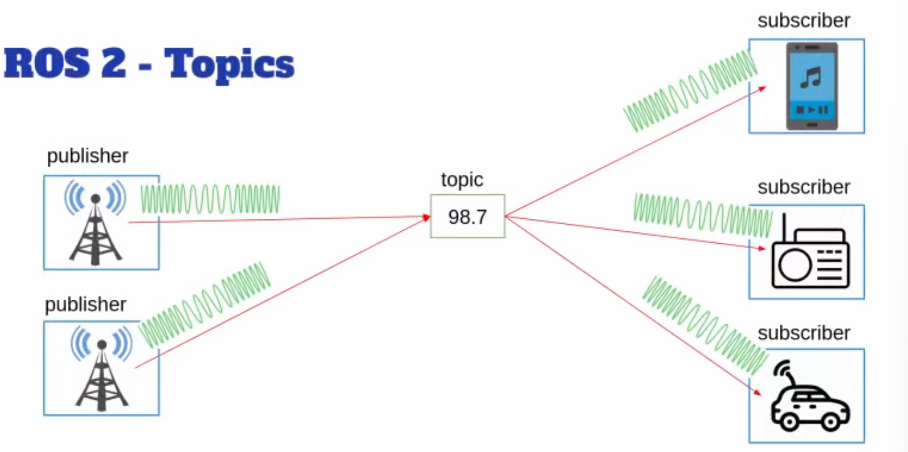
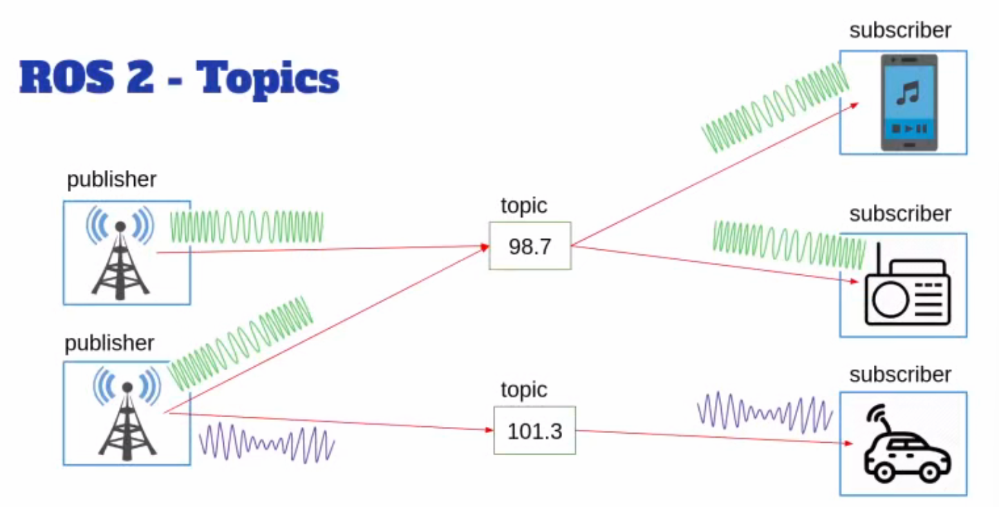
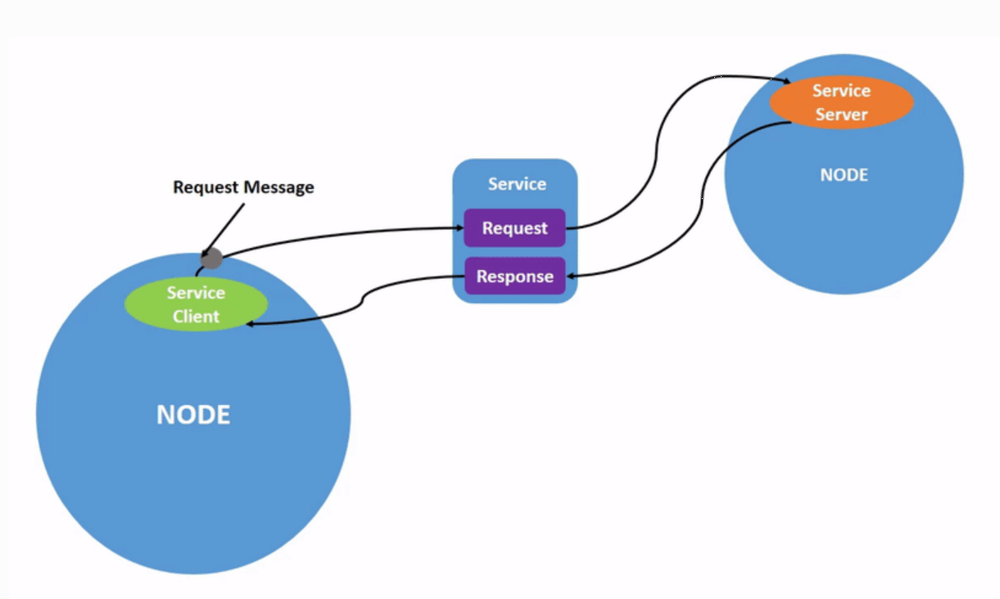
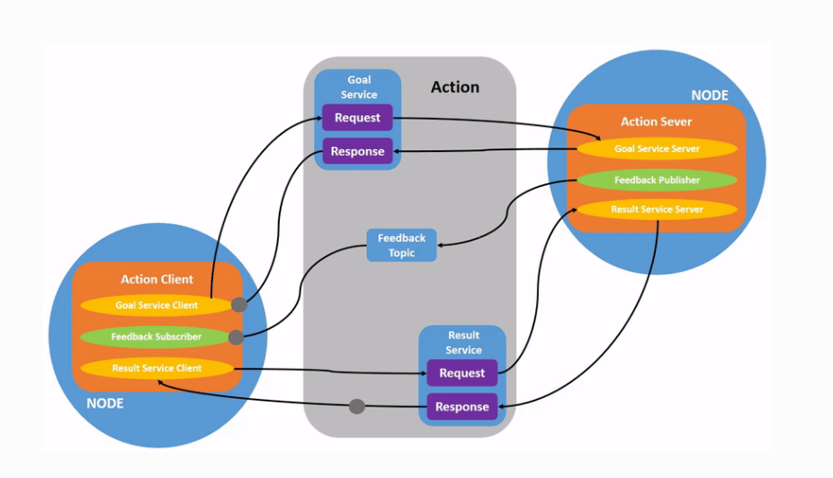

typora-root-url: ./..\pics
nodes
Intro
WHAT IS NODE
- 节点式应用程序的一个子程序，负责单一的模块化功能（类似类class； 他们之间会进行通信。
- 在 ROS 2 中，一个可执行文件（C++ 程序、Python 程序等）可以包含一个或多个节点
- 节点被组合成一个图graph, 使用topic, service, parameters, actions进行通信
理解（以工作空间的角度
- package
- 程序中的独立单元
- 在包中创建节点
-
例子

-
节点
- 相机驱动
- 图像处理
- 说明
- 每个节点都可以单独启动
- 有时候节点放在哪个包比较难以决定
-
节点之间可以通信
-

- 包之间也可以进行通信
Node的好处
- 降低代码复杂度
- 可拓展性强
- 容错率
- 在不同进程中的节点，他们不会直接链接，但是仍然可以通信
- 一个节点崩溃，不会导致其他崩溃节点
- 编程语言无关python，c++等等都可以用
- 你可以在python里开发大部分应用，将某些需要快速执行速度的节点用c++进行编写
[!IMPORTANT]
- 两个节点不能有相同的名称
- 如果要运行同一节点的多个实例，必须要注意
python节点实例
创建节点并且运行
- file: src/my_py_pkg/my_py_pkg/my_first_node.py
#!/usr/bin/env python3
import rclpy
from rclpy.node import Node
def main(args=None):
rclpy.init(args=args) #must-do
node=Node("py_test_node_name") # arg: name
node.get_logger().info("Hello world")
rclpy.shutdown() # must-do, no args
if __name__=="__main__":
main()

-
chmod +x name.py -
普通运行方式：需要召唤 Python 解释器来读取它：
python3 name.py加了chmod +x 后的运行方式：可以像运行原生程序一样直接点名运行它：
./name.py(前提是你在脚本第一行写了特殊的“暗号”，如#!/usr/bin/env python3)
建立可执行文件
-
在setup.py中设置路径
-
src/setup.py
- ```python entry_points={ 'console_scripts': [ "x_file_name = my_py_pkg.my_first_node:main" ], #注意没有文件格式后缀，：后面跟节点；.作为文件树索引
```
-
保存文件
-
去工作空间文件夹下打开终端：
-
python colcon build --packages-select -pkgName -
source ~/.bashrc
-
确保bash文件加入到了.bashrc中的路径,这个文件在install文件底下
-
运行可执行文件
-
python ros2 run package_name xFileName
面向对象编程OOP（节点类）
- 建立节点类：
```python import rclpy from rclpy.node import Node
class MyNode(Node): # 继承 Node 类 def init(self): # 构造函数 super().init("py_test") self.get_logger().info("Hello ROS2!") self.create_timer(1.0,self.timer_callback) #注意这里没有括号!!!!!!!!定了一个闹钟，每隔1 sec响一次 def timer_callback(self): self.get_logger().info("hello world")
def main(args=None): # 注意冒号 rclpy.init(args=args) node = MyNode() # 实例化类 rclpy.spin(node) # 保持节点运行 rclpy.shutdown() # 关闭
if name == 'main': main() ```
c++节点实例
创建节点并运行
-
编码文件区
-
VSCode工作区
- 和python一样，还是在file/src处
-
file/src/pkg/src/ : 空文件区
-
bash touch my_first_node.cpp- touch:创建新的空文件
-
```c++ //my_first_node.cpp #include "rclcpp/rclcpp.hpp"
int main(int argc, char **argv) { rclcpp::init(argc,argv); //initialize
auto node = std::make_shared<rclcpp::Node>("cpp_test"); //share pointer RCLCPP_INFO(node->get_logger(), "Hello world"); rclcpp::shutdown(); return 0;} ```
建立可执行文件
- ```bash //CmakeLists.txt cmake_minimum_required(VERSION 3.8) #CMAKE version project(my_cpp_pkg)
if(CMAKE_COMPILER_IS_GNUCXX OR CMAKE_CXX_COMPILER_ID MATCHES "Clang") add_compile_options(-Wall -Wextra -Wpedantic) endif()
find dependencies
find_package(ament_cmake REQUIRED) find_package(rclcpp REQUIRED)
add_executable(cpp_node src/my_first_node.cpp)
cpp_node:executable file name
node directory path
ament_target_dependencies(cpp_node rclcpp)
1st: executable name
2nd dependencies
install(TARGETS cpp_node # exetable DESTINATION lib/${PROJECT_NAME} )
ament_package()
```
-
终端指令(和python几乎一样)
-
```bash elizabeth@Stewart:~/Documents/ROS2-learning/ros2_ws$ colcon build --packages-select my_cpp_pkg Starting >>> my_cpp_pkg Finished <<< my_cpp_pkg [3.35s]
Summary: 1 package finished [3.57s] elizabeth@Stewart:~/Documents/ROS2-learning/ros2_ws$ ls build install log src elizabeth@Stewart:~/Documents/ROS2-learning/ros2_ws$ source install/setup.bash elizabeth@Stewart:~/Documents/ROS2-learning/ros2_ws$ cd elizabeth@Stewart:~$ ros2 run my_cpp_pkg cpp_node [INFO] [1770211395.606233009] [cpp_test]: Hello world elizabeth@Stewart:~$
```
-
ros2 run my_cpp_pkg cpp_node : 节点名字是可执行文件的名字
面向对象编程
#include "rclcpp/rclcpp.hpp"
class MyNode: public rclcpp::Node
{
public:
MyNode() : Node("cpp_test"), counter_(0)
{
RCLCPP_INFO(this->get_logger(), "Hello World");
timer_=this->create_wall_timer(std::chrono::seconds(1),
std::bind(&MyNode::timerCallback, this));
}
private:
void timerCallback(){
RCLCPP_INFO(this->get_logger(),"Hello %d", counter_ );
counter_ ++;
}
rclcpp::TimerBase::SharedPtr timer_;
int counter_;
};
int main(int argc, char **argv)
{
rclcpp::init(argc,argv); //initialize
auto node = std::make_shared<MyNode>(); //share pointer
rclcpp::spin(node);
rclcpp::shutdown();
return 0;
}
类继承 (Inheritance)
- 语法：
class MyNode : public rclcpp::Node - 细节：通过公有继承，使
MyNode拥有父类Node的所有成员函数（如get_logger()）。这是 ROS 2 组件化开发的基础。
构造函数初始化列表 (Member Initializer List)
- 语法：
MyNode() : Node("name"), counter_(0) - 细节：冒号后直接初始化父类和成员变量。严谨点：这比在
{}内赋值效率更高，因为它避免了先默认构造再赋值的过程，直接进行初始化。
时间间隔表示 (Chrono)
- 语法：
std::chrono::seconds(1) - 细节：C++11 标准时间库。
seconds(1)是一个持续时间对象（Duration）。ROS 2 强制要求使用这类类型安全的时间单位，而不是简单的整数，以防单位混淆（秒 vs 毫秒）。
函数绑定 (Function Binding)
- 语法：
std::bind(&MyNode::timerCallback, this) - 细节：
&MyNode::timerCallback：成员函数的地址。this：当前对象的指针，作为隐式参数传给成员函数。- 语法要点：成员函数必须绑定到具体对象实例才能被调用。
日志宏格式化 (Logging Macro)
- 语法：
RCLCPP_INFO(logger, "format", args...) - 细节：底层基于
printf风格。 %d：必须对应int类型。- 严谨点：宏会在编译预处理阶段展开，第一个参数必须是
rclcpp::Logger类型对象。
运行死循环 (Spinning)
- 语法：
rclcpp::spin(node) - 细节：
- 语法本质：这是一个阻塞式调用。
- 功能：它会让主线程进入等待状态，由 ROS 2 内部的 Executor（执行器）扫描并触发所有已注册的回调函数（如 Timer 或 Subscription）。没有这一行，异步事件永远不会被触发。
命令和操作
ros2
- ros2 +两次Tab: 显示指令菜单
run
ros2 run
ros2 run pkgName exeName
- Remapping
ros2 run turtlesim turtlesim_node --ros-args --remap __node:=my_turtle
node
-
node list
-
ros2 node list -
会显示所有正在运行的节点的名称。当您想要与某个节点交互，或者您的系统运行着许多节点并需要跟踪它们时，这个命令尤其有用。
-
ros2 node infobash ros2 node info <node_name>ros2 node info返回订阅者、发布者、服务和操作的列表，即与该节点交互的 ROS 图连接。
节点间的交互方式
-
话题-topics
-
服务-services
-
动作-Action
-
参数-parameters
topics（主题
作用和规则
-
主题是 ROS 图的重要组成部分，它们充当节点间交换消息的总线
-
主题有一个消息类型(message type)
-
一个节点可以向任意数量的主题发布数据，并同时订阅任意数量的主题
-
订阅者和发布者匿名且相互独立
-
以收听电台为例
-
ROS2 概念 电台比喻 说明 Node (节点) 电台设备 / 手机 每一个运行的程序实体。发射塔是一个节点，你的手机也是一个节点。 Publisher (发布者) 无线电发射源 节点内部负责“往外广播”的那个功能组件。 Topic (话题) 调频频率 (例如 FM 101.5) 这是最关键的一点：Topic 不是电台本身，而是大家约好的那个“频道号”。 Message (消息) 音频信号 在频道里流动的具体内容（音乐、新闻等）。 Subscriber (订阅者) 手机里的收音插件 节点内部负责“监听并解码”的那个功能组件。 -

-
同一个主题可以有多个publisher, subscriber
- publisher和subscriber自由组合：publisher和subscriber发送或者接受相同类型的数据
- publisher和subscriber相互独立，且匿名：不知道对方是谁
-
一个节点还可以发送多个主题
-

-
数据流动时单项的
什么时候使用主题
- 比如监听传感器
命令和操作
-
rqt_graph
-
可视化变化的节点和主题，以及它们之间的连接。
-
bash ros2 run rqt_graph rqt_graph -
list
-
bash ros2 topic list -
echo
-
bash ros2 topic echo <topic_name> -
查看某个主题已发布的数据
-
info
-
bash ros2 topic info /turtle1/cmd_vel ros2 topic info /turtle1/cmd_vel --verbose //详细信息 -
interface
-
节点通过主题以消息的形式发送数据。发布者和订阅者必须发送和接收相同类型的消息才能进行通信。
-
bash ros2 interface show geometry_msgs/msg/Twist -
pub
-
bash ros2 topic pub <topic_name> <msg_type> '<args>' -
'<args>'参数是您将传递给主题的实际数据，
service
- 服务是 ROS 图中节点间另一种通信方式。服务基于呼叫-响应模型，而非主题的发布-订阅模型。主题允许节点订阅数据流并持续获取更新，而服务仅在客户端明确调用时才提供数据。

命令和操作
-
list
-
```bash ros2 service list ros2 service list -t //同时查看所有活动服务的类型
-
类型
-
ros2 service type <service_name> -
info
-
bash ros2 service info <service_name> ros2 service info --verbose <service_name> -
find
-
```bash ros2 service find
-
要查找特定类型的所有服务
-
interface
-
bash ros2 interface show <type_name> -
service call
-
调用服务
-
ros2 service call <service_name> <service_type> <arguments> -
service echo
-
bash ros2 service echo <service_name | service_type> <arguments>
parameters
-
parameter
-
作用（配置结点）：ROS 2 中的参数与各个节点相关联。参数用于在启动时（以及运行时）配置节点，而无需更改代码。参数的生命周期与节点的生命周期绑定（尽管节点可以实现某种持久化机制，以便在重启后重新加载参数值）。
-
参数的寻址方式：节点名称、节点命名空间、参数名称和参数命名空间。
- 提供参数命名空间是可选的。
-
组成： 每个参数由键、值和描述符组成
- 键是字符串类型，值可以是以下类型之一：
bool、int64、float64、string、byte[]、bool[]、int64[]、float64[]或string[]。默认情况下，所有描述符均为空，但可以包含参数描述、值范围、类型信息和其他约束条件。
- 键是字符串类型，值可以是以下类型之一：
-
参数声明
-
默认情况下，节点需要声明其生命周期内将要接受的所有参数。这样可以在节点启动时明确定义参数的类型和名称，从而降低后续配置错误的几率
-
参数类型
-
预定义类型
- ParameterType.PARAMETER_INTEGER：整数（如 42）
- ParameterType.PARAMETER_DOUBLE：浮点数（如 3.14）
- ParameterType.PARAMETER_STRING：字符串（如 "hello"）
- ParameterType.PARAMETER_BOOL：布尔值（如 True/False）
- ParameterType.PARAMETER_BYTE_ARRAY：字节数组（二进制数据）
- 还有数组形式，如整数数组 [1, 2, 3]。
-
. 默认行为：运行时类型不可变
- 默认规则：当您声明一个参数时（比如声明为整数），在节点运行期间（runtime），您不能通过工具（如 ros2 param set）或代码更改它的类型。这会失败，并报错。
-
参数回调
-
理解： “回调”（Callback）是编程中的一个常见概念，指一种函数（或方法）作为参数传递给另一个函数，当特定事件或条件发生时，被自动调用执行。简单说，它像“等电话”：提供一个“电话号码”（回调函数），当“事件”来了（如按钮点击、数据到达），系统就“打电话”给你，让你处理。
-
为什么用回调？
- 异步处理：不阻塞主程序，等事件触发再响应（高效）
- 解耦：调用者和被调用者不需紧耦合，灵活。
- 常见场景：GUI 事件（如点击按钮）、网络请求完成、定时器到期等。
-
三种类型
- Pre-Set：参数变化之前，可以修改即将设置的值（像“预处理”）
- Set：参数变化即将发生时，检查并可能拒绝（像“审核”）
- Post-Set：参数变化成功后，执行反应（像“后处理”）。
-
和参数交互：外部进程可以通过节点实例化时默认创建的参数服务执行参数操作
actions
- 动作是通信类型之一，专为长时间运行的任务而设计。它们由三部分组成：目标、反馈和结果(a goal, feedback, and a result)
-
Actions 使用客户端-服务器模型，类似于发布者-订阅者模型（详见主题）。“Action 客户端”节点向“Action 服务器”节点发送目标，后者确认目标并返回反馈流和结果。
-

-
语言库
rcl
- rcl: ros2 client lib
- 是ros2最基础的库
- 使用许多库都建立在rcl上，比如
- rclcpp
- rclpy
- rcljava
- rcl...